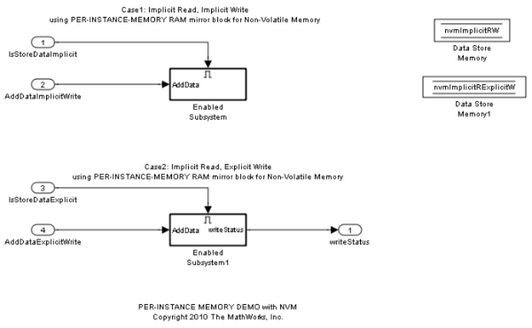

データ ストアを使用したインスタンスごとのメモリへのアクセス
このデモでは、インスタンスごとのメモリで AUTOSAR ソフトウェア コンポーネントを変換する方法を示します。
目次
インスタンスごとのメモリの概要
インスタンスごとのメモリは、ソフトウェア コンポーネント内でインスタンス固有のグローバル メモリを指定するために AUTOSAR によって提供される機能です。AUTOSAR ランタイム環境のジェネレーターはこのメモリを割り当て、このメモリにアクセスするための API を提供します。
インスタンスごとのメモリのモデル作成
Simulink® モデルでインスタンスごとのメモリを使用するには、"PerInstanceMemory" カスタム ストレージ クラスを指定する AUTOSAR.Signal データ オブジェクトと共に Data Store Memory ブロックを追加します。rtwdemo_autosar_PIM モデルを開いて、この使用例を参照してください。
open_system('rtwdemo_autosar_PIM')
 AUTOSAR.Signal オブジェクトの nvmImplicitRExplicitW および nvmImplicitRW がベース ワークスペースに作成され、モデル内の Data Store Memory ブロックによって参照されています。このモデルのために生成された C コードでは、それぞれ関数 Rte_Pim_nvmImplicitRExplicitW() および Rte_Pim_nvmImplicitRW() を介してデータ ストアの値にアクセスしています。
複数実行エンティティでデータ ストアにアクセスする際のデータ整合性の強制
ソフトウェア コンポーネントの内部動作のために生成された XML ファイルには、インスタンスごとのメモリを参照する各 Data Store Memory ブロックの専用領域が設けられています。このインスタンスごとのメモリにアクセスする実行エンティティは、対応する専用領域内で実行されます。複数の AUTOSAR 実行エンティティが同じ Data Store Memory ブロックにアクセスすると、エクスポートされた AUTOSAR の指定によって AUTOSAR 専用領域を使用することでデータの整合性が強制されます。この指定は、実行エンティティがインスタンスごとのメモリのグローバル データに相互排他的にアクセスできるようにし、データの破損を防止します。
データ ストアを使用した不揮発性メモリのミラー
AUTOSAR アプリケーションから不揮発性メモリにアクセスして利用するには、一般的なグローバル データの定義に加えて、インスタンスごとのメモリを不揮発性メモリのデータの RAM ミラーとして使用することができます。AUTOSAR には、不揮発性メモリの内容をインスタンスごとのメモリの RAM ミラーと同期させるための 2 つの動作モードがあります。rtwdemo_autosar_PIM モデルは、これらの 2 つのモードを示します。
- 暗黙的読み取り、暗黙的書き込み
ECU の起動時に、インスタンスごとのメモリの内容が NvM マネージャー モジュールによって初期化されます。コンポーネント内での実行エンティティの実行中にインスタンスごとのメモリ ブロックが更新され、その後で AUTOSAR サーバー処理 Nvm.setRamBlockStatus(true) が呼び出されると、電子コントロール ユニット (ECU) のシャットダウン中にメモリの内容が保存されます。
- 暗黙的読み取り、明示的書き込み
ECU の起動時に、インスタンスごとのメモリの内容が NvM マネージャー モジュールによって初期化されます。ソフトウェア コンポーネントの実行中、インスタンスごとのメモリの値が更新され、AUTOSAR サーバー処理 NvM.WriteBlock(NULL) が実行されると、メモリの内容が保存されます。この方法は、ECU のシャットダウンを待たずに不揮発性メモリに直ちに値を書き込むときに便利です。
AUTOSAR.Signal データ オブジェクトが PerInstanceMemory カスタム ストレージ クラスを指定すると、データ属性 "needsNVRAMAccess" を true に設定することで、このインスタンスごとのメモリを特定の不揮発性メモリ ブロックのミラー ブロックに指定することができます。この設定により、インスタンスごとのメモリが RAM ミラー ブロックとして使用され、NvM マネージャー モジュールで処理する必要があることを示すように、SERVICE-NEEDS エントリ (スキーマ バージョン 3.0) または NVRAM-MAPPINGS エントリ (スキーマ バージョン 2.1) がソフトウェア コンポーネントの内部動作で宣言されます。
メモ: オーサーリング ツールへのマージ
このデモでは不揮発性メモリを使用します。生成した XML ファイルを AUTOSAR オーサリング ツールにインポートする場合は、Data Store Memory ブロックによって参照されるサーバー インターフェイス (NvMInterface2.arxml) を含める必要があります。
詳細情報
bdclose('rtwdemo_autosar_PIM') clear nvmImplicitRExplicitW nvmImplicitRW